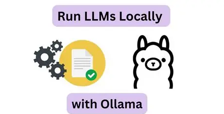
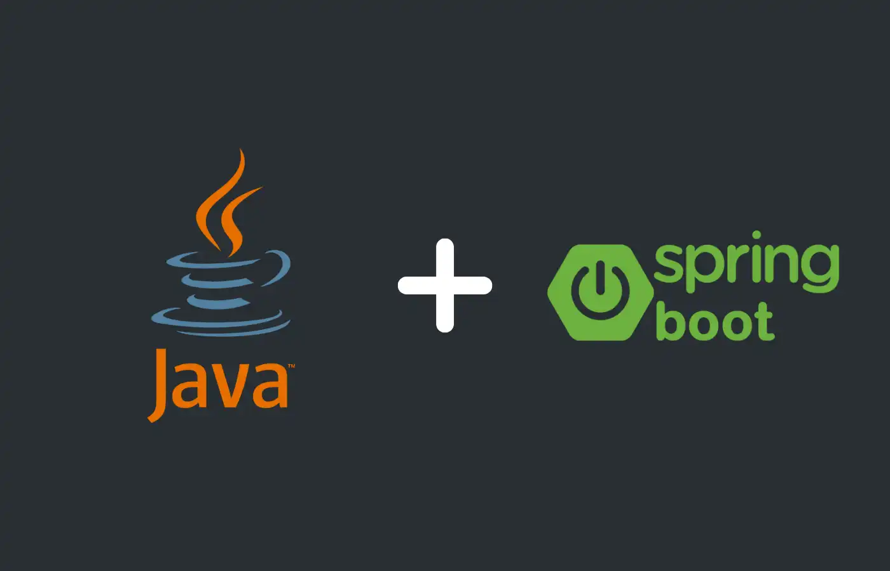
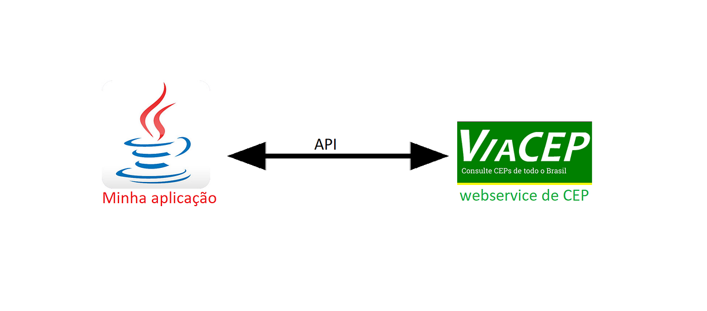

Meus Projetos
Alguns dos projetos que desenvolvi durante meus estudos, explorando diferentes tecnologias e soluções.

Sobre o projeto
O Agente de Estudos Local é uma aplicação desenvolvida em Python que utiliza o Ollama para executar modelos de Inteligência Artificial diretamente no computador. A aplicação funciona sem necessidade de chaves de API, contas externas ou serviços em nuvem. Possui chat com respostas em streaming, memória de conversação, histórico local e funcionalidades de planejamento de estudos e revisão ativa. O projeto utiliza Python, Ollama e Streamlit, explorando a execução local de modelos de linguagem e a criação de assistentes inteligentes.

Sobre o projeto
O Agente de Estudos com IA foi desenvolvido durante a Imersão Dev – Engenharia de Software na Era da IA. A aplicação funciona como um mentor de estudos personalizado, capaz de organizar cronogramas com base nos objetivos, prazos, disponibilidade e nível de conhecimento do estudante. Também oferece revisão espaçada, geração de flashcards, quizzes e exportação dos planejamentos para o Google Agenda. Utiliza Python, Google ADK, Gemini, Google Cloud Platform e Antigravity CLI, explorando a construção de agentes inteligentes com ferramentas especializadas.

Sobre o projeto
O Agendador de Serviços de Tapeçaria é uma aplicação web desenvolvida para permitir que clientes realizem agendamentos de serviços de tapeçaria. O sistema permite selecionar o serviço desejado, escolher o tapeceiro, informar a data e selecionar um horário disponível. Possui prevenção de conflitos para impedir que dois clientes reservem o mesmo horário, além de tratamento centralizado de exceções e integração entre Frontend e Backend por meio de uma API REST. O Backend utiliza Java 25, Spring Boot, Spring Data JPA, H2 Database, Bean Validation e Lombok. O Frontend utiliza HTML, CSS, JavaScript e Fetch API.

Sobre o projeto
O Game Manager API é um projeto Backend voltado ao gerenciamento de jogos, permitindo criar, listar, buscar jogos por identificador e movimentá-los entre diferentes listas. A aplicação utiliza arquitetura em camadas, separando as responsabilidades entre Domain, Repository, Service e Controller. Também conta com integração ORM para persistência de dados e inicialização automática do banco de dados por meio de seed. O projeto demonstra conhecimentos em desenvolvimento Backend, organização de software e gerenciamento de dados por meio de APIs.

Sobre o projeto
O Consulta CEP é uma aplicação que realiza consultas de CEPs brasileiros por meio do consumo de uma API externa. Seu objetivo é facilitar a obtenção de informações de endereços brasileiros, demonstrando conhecimentos em requisições HTTP, integração com serviços externos e consumo de APIs.